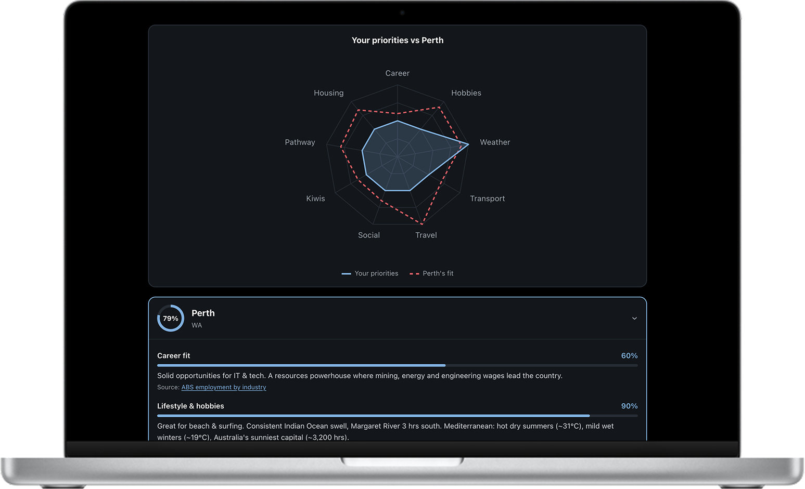

Kiwi Compass
Around 700,000 New Zealanders live in Australia, and most picked their city on hearsay. I designed and built Kiwi Compass end-to-end: an installable web app that matches who you are - work, hobbies, budget, household - against twelve Australian cities using official data, with a self-weighted scoring model, a radar graph of your priorities, and the reasoning behind every score.
Open project